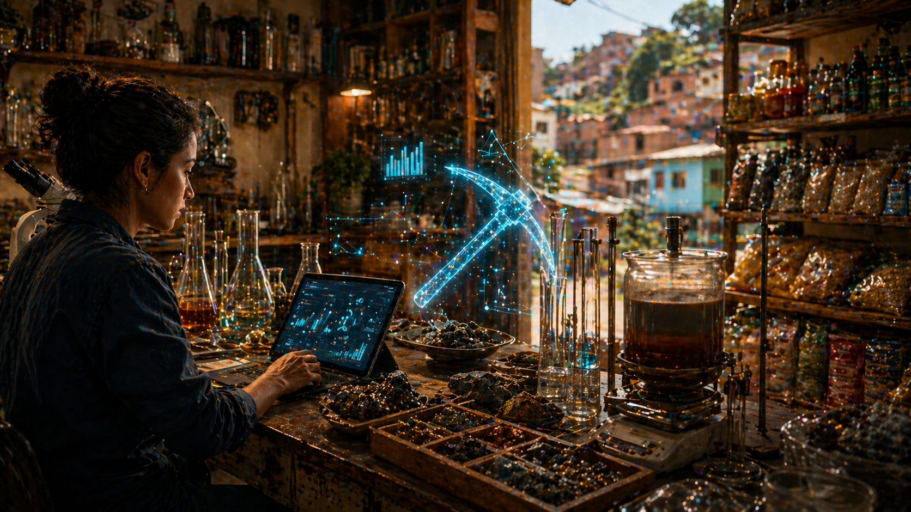

A Picareta Digital no Chão do Lab
Do Manifesto Para a Bancada
A tese é simples: ouro, prata e silício só importam quando saem do manifesto e entram na bancada. Se o Minerador 4.0 fala de matéria, ele precisa mostrar o que o aluno faz com ela.
A proposta da oficina é direta: transformar química mineral e economia em uma experiência jogável, mas sem virar parque de diversões com jaleco. O aluno opera um centro de controle. Vê Campo Largo no mapa mental. Entra pelo Parque Newton Puppi. Testa parâmetros. Observa consequência.
Isso muda o tom. Não estamos vendendo "descubra ouro com IA". Estamos ensinando que minério sem processo é promessa, simulação sem premissa é chute e mercado sem custo é fanfic de investidor apressado.
O Centro de Controle
O Minerador 4.0 é um aplicativo desktop instalável. Isso parece detalhe, mas não é. Para escola, laboratório e aluno, abrir uma ferramenta local, mexer, errar e repetir vale mais do que depender de um serviço distante que exige cerimônia até para respirar.
A interface organiza três áreas. Campo mostra o território e os sinais geológicos. Lab permite alterar volume, pH e concentração. Mercado conecta o resultado a valor, custo e viabilidade.
A gamificação entra com propósito. O score não é estrelinha por apertar botão. Ele combina pureza do neodímio e sustentabilidade do processo. Ou seja: a brincadeira cobra engenharia. O jogo olha para o aluno e diz: "parabéns, você separou melhor; agora explica o custo e o impacto".
[CAMPO] amostra=monazita_local | origem=Campo_Largo | massa=2.5kg
[LAB] ph=4.8 | volume=1.2L | concentracao=0.35mol/L
[MOTOR] python=ativo | operacao=precipitacao_seletiva | massa_oxido=calculada
[SCORE] pureza_Nd=estimada | sustentabilidade=em_avaliacao
[MERCADO] valor_LME=referencia | custo=estimado | decisao=estudar_melhorQuando o Motor Responde
O ponto forte da oficina é que a tela não fica sozinha. Quando o aluno mexe no pH ou no volume de lixívia, o motor Python do ETE processa cálculo real de massa de óxido e pureza estimada. A interface vira uma conversa com o processo.
É aqui que a formação técnica fica interessante. O aluno percebe que cada controle tem consequência. Aumentou concentração? Mudou recuperação. Alterou pH? Mudou janela de precipitação. Quer pureza maior? Talvez precise cascata, reagente, tempo e dinheiro. A natureza não aceita atalho via botão azul.
Esse tipo de resposta educa melhor do que palestra solta. Não porque palestra seja inútil. Mas porque o erro, quando aparece na tela, vira professor sem paciência. E às vezes é disso que a gente precisa.
Onde Entra a ETE Sem Confusão
A ETE entra como motor e como herança de processo. Não entra como promessa torta de "tirar metal do esgoto doméstico". Essa frase precisa ficar fora da sala, tomando chuva.
No projeto, ETE é transferência de lógica: separação, decantação, tratamento de fluxos, balanço de massa e processo modular aplicados ao refino de soluções minerais, PLS, concentrados e mineração urbana.
Na hidrometalurgia, você não joga tudo em uma panela e espera sair neodímio limpo por educação. Existe pH, Kps, reagente, tempo, precipitação seletiva, pureza acumulada, erro de medição e validação.
Por isso o produto conversa com aula, laboratório, empreendedorismo e território. Ele não pede que o aluno acredite. Ele pede que o aluno teste.
Feedstock -> monazita, bastnasita, reciclado, PLS
Beneficiamento -> separacao, concentracao, ajuste de pH
Ensaio -> Kps, precipitacao, pureza, recuperacao
Viabilidade -> OPEX, CAPEX, ROI, payback
Validação -> profissional habilitado, planta, escala realBiblioteca, Fases e The Golden Gate
A oficina também precisa mostrar caminho. Por isso o Minerador 4.0 não vive só no painel principal. Ele carrega Biblioteca Digital, tooltips, fontes acadêmicas, substâncias, normas, fórmulas e contexto local. O aluno não fica apertando controle no escuro.
A estrutura em fases ajuda a dosar a entrada. A fase ambiental valida fundamentos como pH e DBO. Depois vem a camada premium de terras raras, o Alquimista de Metais. O nome é dramático? Sim. Mas pelo menos avisa que tem dragão no portão.
O The Golden Gate organiza esse acesso. Não é só bloqueio comercial. É posicionamento: desbloquear o motor completo financia ciência local, material de estudo e evolução do simulador. O PIX aqui não é esmola para botão colorido. É compra de trilha técnica.
Isso conversa especialmente com jovens em formação. A pergunta "por que aprender isso?" ganha uma resposta concreta: porque a matéria-prima que constrói videogame, motor elétrico, imã, sensor e futuro industrial não nasce pronta na prateleira.
O Que Não Devemos Prometer
Simulador não substitui engenharia de planta. Relatório não substitui validação profissional. Score não assina ART. O ganho está em criar base para conversar melhor com o problema, não em fingir que a ferramenta resolve o mundo sozinha.
O Minerador não promete que uma amostra vira negócio. Não promete que uma curva bonita paga CAPEX. Não promete que simular recuperação é o mesmo que operar uma planta. Se prometesse isso, não seria inovação; seria bravata com gráfico.
O que ele promete é mais útil: reduzir cegueira técnica, criar linguagem comum e separar curiosidade de chute. Uma picareta não encontra ouro sozinha. Mas na mão certa, evita cavar no lugar errado por meses.
Amarra
Ouro, prata e silício dão a metáfora. A oficina mostra a mão que segura a ferramenta. Minerar valor é menos sobre brilho e mais sobre método.
Ouro é a base sólida. Prata é o dado que circula. Silício é a máquina que executa. A picareta digital entra como gesto: transformar território, matéria e hipótese em aprendizagem técnica.
A pergunta muda de tamanho quando uma máquina mede tudo e ainda assim precisa ser limitada para continuar honesta. Aí entra a ETE com sua ironia mais útil: limitar para enxergar melhor.
Porque no chão da tecnologia real, valor não é só o que aparece no relatório. Valor é o que sobra quando método, matéria e validação param de brigar e começam a trabalhar juntos.
Hashtags
Contato
- E-mail: suporte@caracore.com.br
- Site: www.caracore.com.br
- LinkedIn: Cara Core Informática
Campo, Lab e Mercado para aprender terras raras com método.
Conhecer o Minerador 4.0
Artigo publicado em 11 de julho de 2026
© 2026 Cara Core Informática. Todos os direitos reservados.